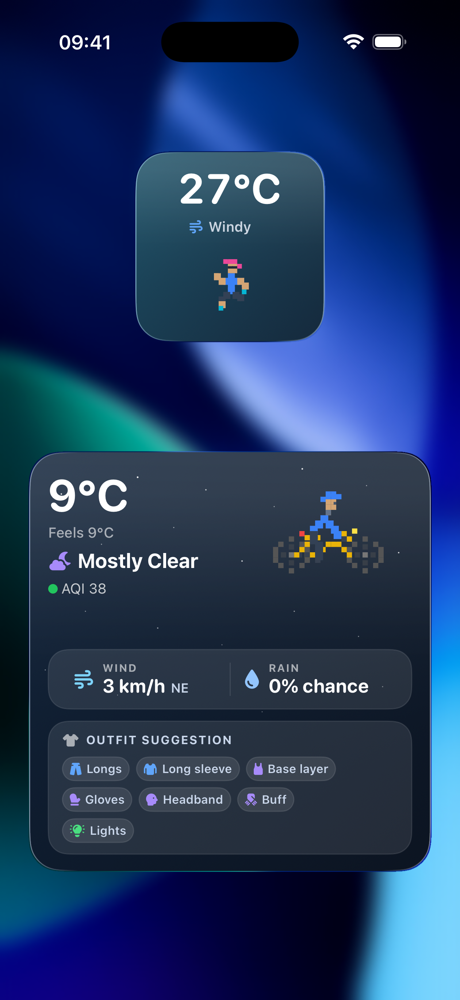

Start with the moment that gets cold.
A cycling outfit has to work while you are moving, not while you are standing in the hallway deciding whether you are cold. Overdress for the first five minutes and you often spend the next two hours damp.
Before you leave, check:
- Where will this ride feel coldest?
- When is rain actually likely?
- What is the smallest layer that fixes the bad part without ruining the easy part?
- Leave a little cool, then judge the kit after ten minutes of riding.
- Respect descents, shade, exposed roads, and headwind more than the start temperature.
- Use pieces you can vent or pocket: gilet, arm warmers, light gloves, buff, compact shell.
Cycling clothing cheat sheet
Use the table as a starting point, then adjust for effort and your own thermostat. Hard intervals run hot. Easy commuting, long descents, fatigue, and rain pull the other way.
| Feels like | Typical kit | Bring or check |
|---|---|---|
| 28°C+82°F+ | Light jersey, shorts, breathable socks, sunglasses. | Extra fluids, sunscreen, water stops, exposed-road timing. |
| 20-28°C68-82°F | Short sleeve, shorts. Usually simple kit. | Gilet or light shell if the route has a long descent or evening finish. |
| 15-20°C59-68°F | Short sleeve with arm warmers, shorts, optional gilet. | Light gloves if windy, vest for descents, clear lenses near dusk. |
| 10-15°C50-59°F | Long sleeve or short sleeve with warmers, leg warmers or longs, gilet. | Gloves, buff, wind shell if exposed. Rain shell if showers are likely. |
| 5-10°C41-50°F | Base layer, long sleeve or thermal jersey, longs, gloves. | Wind jacket, buff/headband, overshoes if wet, lights for low visibility. |
| 0-5°C32-41°F | Thermal layer, windproof outer, winter gloves, longs. | Warm head/neck, overshoes, lights, road surface check. |
| Below 0°CBelow 32°F | Thermal kit, windproof layers, winter gloves, warm head/neck and feet. | Daylight, road surface, warm gloves, warm feet, reliable stop options. |
Layering is mostly sweat control.
A base layer is not magic insulation. Its first job is to move sweat away from your skin. The jersey or thermal layer gives most of the warmth. The outer layer decides how much wind and rain get through.
On the bike, a gilet earns its pocket space because it protects your chest on descents while your arms can still vent. That adjustability matters: you can unzip a gilet or stash it in a pocket when the route warms up.
The small parts matter. Gloves, overshoes, a headband, and a buff often do more for comfort than adding another torso layer.
Rain and wind change the decision
The same temperature can feel completely different once you add speed, a headwind, or wet fabric. Wind strips heat. Rain makes clothing colder and heavier. Together they are why a mild forecast can still become a miserable ride, especially once hands or feet get wet.
- If rain starts later, pack the shell instead of wearing it from the start.
- If rain is heavy and cold, add a proper rain layer.
- If rain is warm and brief, breathable kit may be enough.
- If wind is strong but rain is unlikely, a wind jacket or gilet often beats a rain jacket.
- If the route ends after dark or fog is possible, lights are clothing-adjacent safety gear.
The morning commute check
For commuting, the useful question is not "what is the weather today?" It is "what will it be like when I leave, what will it be like when I ride home, and what changes between the two?"
- Check the start and return windows separately.
- Look for rain timing, not just rain probability.
- Pack the smallest layer that fixes the worst likely condition.
- Keep lights in the plan when fog, low sun, or late return is possible.
The widget is meant for that one glance before you leave: current weather, wind, rain chance, air quality, and the kit call before you are standing beside the bike debating gloves.

How Route Companion makes the kit call
Route Companion samples weather along the route and the expected ride window instead of using one forecast point. It looks at feels-like temperature, wind, rain probability and amount, UV, daylight, fog, activity type, and your own warm/cold preference.
Wind gets an extra nudge on top of feels-like. The forecast's feels-like already accounts for wind on a standing person, but a rider moving at speed meets far more airflow, so strong wind shifts the suggestion a little colder than the raw number suggests.
The output stays deliberately plain: shorts or longs, sleeve choice, base layer, gilet, wind jacket, rain shell, gloves, buff, overshoes, sunscreen, and lights when they matter. You can also remove items you do not own so the suggestion matches your kit drawer.
The goal is not to sound clever. It is to catch the part of the route the normal weather widget hides.
What the app uses
Route Companion checks forecast conditions along the route and expected ride window, then runs those through its own outfit rules. The main inputs are feels-like temperature, wind speed, rain probability and amount, UV, daylight, fog, cycling mode, and your warm/cold preference.
It does not know every local detail. Shade, road spray, cafe stops, and how hard you plan to ride are still rider judgment.
Reference notes: Route Companion uses forecast data to calculate the route weather shown in the app. For background on terms like "feels like" and wind chill, see the UK Met Office and NOAA / National Weather Service.